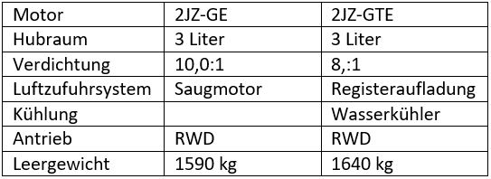

Supra MK4
Die Supra wird teilweise als PS-Monster sondergleichen dargestellt. Dies entspricht aber nicht der Wahrheit. Die Supra wird von einem (immerhin) 220-330 PS starken Reihen-Sechszylinder Motor angetrieben, der die Leistung entweder über ein handgeschaltetes 5 bzw. 6-Gang Getriebe oder ein 4-Stufen Automatikgetriebe an die Hinterräder verteilt.
Es sei erwähnt, dass der Motor dieses KFZs beinahe so bekannt ist wie das Auto als solches. Aufgrund seiner extremen Robustheit und seinem enormen Leistungspotential geniesst der allgemein als "2JZ" bekannte Motor hohe beliebtheit. Und wegen seines hohen Potenzials existieren eine hand voll Umbauten weit jenseits der 1000 PS Grenze.